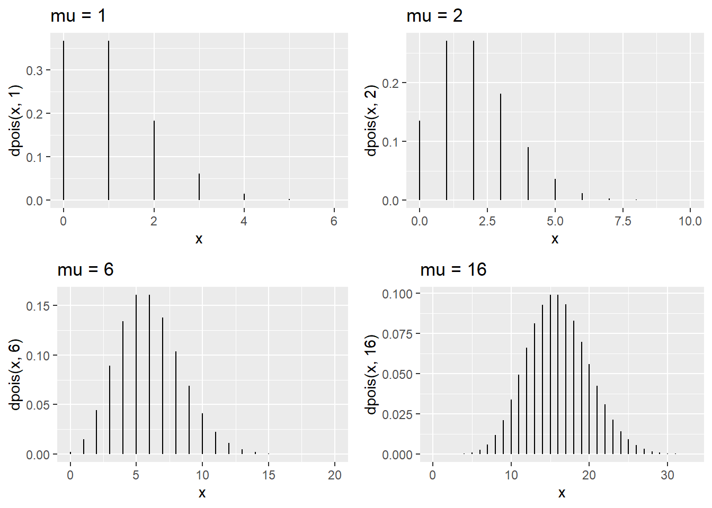
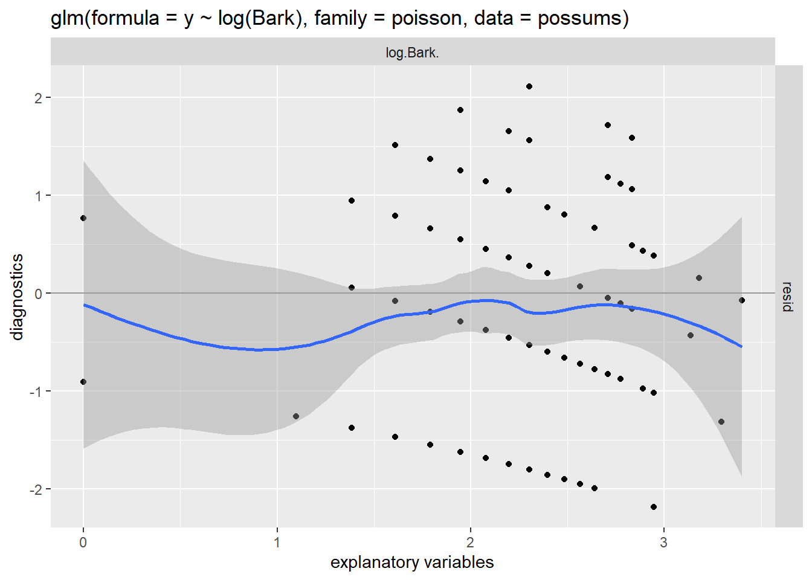
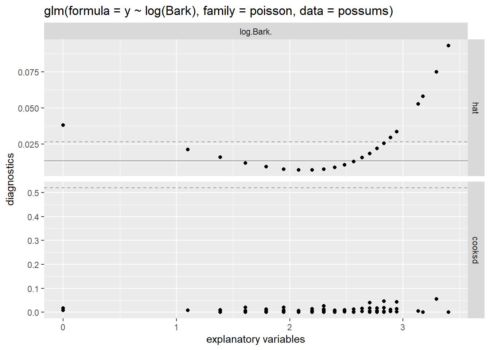
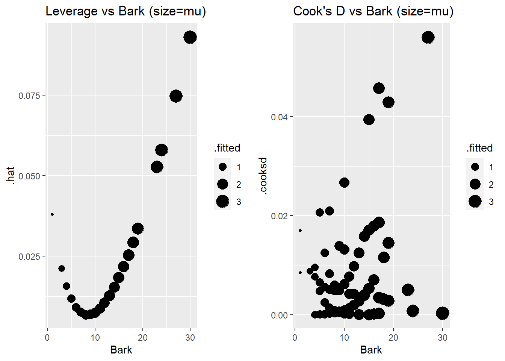

Chapter 5 Poisson Regression
This chapter covers material from chapter 23 of Sleuth.
5.1 The Poisson distribution
The Poisson distribution is a probability model for a random variable that counts the number of “events” (or successes) that occur in a fixed period of time and/or space. For example:
- the number of accidents that occur per month at an intersection
- the number of cancer cases per year in a county
- the number of potholes per mile on interstate 35
To model these types of counts with a Poisson distribution, we must assume that
- two events can’t occur at exactly the same time/location (e.g. two different accidents can’t occur at exactly the same time)
- events occur independently over time/space (e.g. the occurance of one accident isn’t going to make another more or less likely)
If \(Y\) is a random variable with a Poisson distribution, then the probability that it equals some number \(y\) is \[ P(Y = y) = \dfrac{e^{\lambda}\lambda^y}{y!} \ \ \textrm{ for any } y = 0,1,2,\dotsc \] Note that Poisson counts \(Y\) don’t have an “upper limit” like Binomial counts do so it can take on any integer value from 0 on up.
The parameter \(\lambda\) (“lambda”) in this model tells us the mean response value, or the expected number of events per unit of time/space: \[ E(Y) = \mu = \lambda \] We need to have \(\lambda >0\) since our counts can’t take on negative values. The variance of \(Y\) is also equal to the mean: \[ Var(Y) = \sigma^2 = \lambda \] and the standard deviation is then equal to \[ SD(Y) = \sigma = \sqrt{\lambda} \]
So the expected rate of events \(\mu = \lambda\) also tells us how variable our observed counts are likely to be. The larger the mean rate of events, the more variable our counts will be. Hence, our Poisson regression model will not have a “constant variance” assumption. The Poisson distribution is also skewed right for small values of the mean rate but becomes more symmetric as \(\mu\) gets bigger. The plots below display Poisson distributions for a few values of \(\mu\).

5.2 The Poisson model form
We will assume that our response \(Y_i\) for case \(i\) is modeled by a Poisson distribution with mean (expected rate) that we will denote as \(\mu(Y_i \mid X_i)\) (instead of \(\lambda\), just to be consistent with earlier models): \[ Y_i \mid X_i \overset{indep.}{\sim} Pois(\mu(Y_i \mid X_i)) \]
Our modeling goal is once again to model the mean response \(\mu(Y_i \mid X_i)\) as a function of predictor \(X_i = (x_{1,i}, \dotsc, x_{p,i})\). To do this we need to ensure that we have a model that always maps values of \(X_i\) to positive values of \(\mu(Y_i \mid X_i)\). We will do this by using another generalized linear model.
The link function for our model is the log function defines the linear combination of predictors as the log of the mean response: \[ \ln(\mu(Y_i \mid X_i)) = \eta_i = \beta_0 + \beta_1 x_{1,i} + \dotsm + \beta_p x_{p,i} \] The kernel mean function for our model, which is the inverse of the link, is the exponential function so that \[ \mu(Y_i \mid X_i) = e^{\eta_i} =e^{\beta_0 + \beta_1 x_{1,i} + \dotsm + \beta_p x_{p,i}} \] This ensures that for any value of \(\eta_i\), we get a positive value for our mean response. This is an example of a log-linear model.
The scatterplots below show an example of data generated from a SLR model and a Poisson model. Notice that the mean line in a SLR is a linear function of \(x\) and we see symmetric, constant variation around the mean line. In the Poisson model data, we see a non-linear increase in the mean response as \(x\) grows, along with increasing variation around the mean line. The variation around the mean line is right-skewed for smaller mean values but becomes more symmetric for larger mean values.

5.2.1 Interpretation
If we have untransformed predictors, we can say that a 1 unit increase in \(x_1\), for example, is associated with a \(e^{\beta_1}\) multiplicative change in the mean response \(\mu\): \[ \mu(Y \mid X+1) = e^{\beta_0 + \beta_1 (x_{1}+1) + \dotsm + \beta_p x_{p}} = \mu(Y \mid X)e^{\beta_1} \]
Notice that this is similar to interpretation of an exponential model in SLR/MLR (Section 2.10), except that in the Poisson model we are setting our linear combination of terms equal to the logged-mean response \(\ln(\mu_Y \mid X)\). In the SLR/MLR model, we are setting our linear combination of terms equal to the mean of the logged-responses \(\mu(\ln(y) \mid X)\). Interpretation of the Poisson log-linear model is easier because exponentiating the linear combination returns to us the the mean response.
If we took the natural log of \(x_1\), we can say that a multiplicative change of \(m\) in \(x_1\) is associated with a \(m^{\beta_1}\) multiplicative change in the mean response \(\mu\): \[ \mu(Y \mid mX) = e^{\beta_0 + \beta_1 \ln(mx_{1}) + \dotsm + \beta_p x_{p}} = \mu(Y \mid X)m^{\beta_1} \]
5.3 EDA
The Poisson model assumes that the quantitative predictors are linearly related to the log of the mean response. EDA to check this assume consists of a scatterplot of \(\ln(y)\) vs. \(x\), looking for a transformation of \(x\), if needed, that displays a linear relationship. Constant variance is not assumed.
5.3.1 Example: Possums
The data in possums was collected from a sample of \(n = 151\) 3-hectare sites in Australia. Our goal is to determine which factors are associated with good habitat for possums. The response recored for each site is y= the number of possum species found on the site. We will start by just considering the predictors Bark = bark quality index (low to high quality).
> possums <- read.csv("http://people.carleton.edu/~kstclair/data/possums.csv")
> summary(possums$y)
## Min. 1st Qu. Median Mean 3rd Qu. Max.
## 0.000 0.000 1.000 1.477 2.000 5.000
> summary(possums$Bark)
## Min. 1st Qu. Median Mean 3rd Qu. Max.
## 1.000 6.000 8.000 8.914 10.000 30.000At least 25% of sites had no possum species observed, and about 75% of sites had 2 or fewer species observed. The middle 50% of sites had bark indices between 6 and 10.
To check if Bark needs to be transformed, we need look at log-y vs Bark. Since y has many 0 species counts we will need to add a small amount (.5) to the vector y before plotting. As bark index increases, there is a slightly non-linear increase in number of species observed for untransformed Bark. The plot of log(y) vs. log(bark) looks more linear. A small amount of jitter was added in both directions to avoid overplotting issues.
> plotA <- ggplot(possums, aes(x=Bark, y = y + .5)) +
+ geom_jitter(width = .01, height=.01) + geom_smooth(se=FALSE) +
+ scale_y_log10() +
+ labs(title="Log-Number species vs. Bark index")
>
> plotB <- ggplot(possums, aes(x=Bark, y = y + .5)) +
+ geom_jitter(width = .01, height=.01) + geom_smooth(se=FALSE) +
+ scale_y_log10() + scale_x_log10() +
+ labs(title="Log-number species vs. log-Bark index")
>
>
> grid.arrange(plotA, plotB, nrow=1)
5.4 Inference and estimation
Estimation of Poisson model parameters \(\beta_0, \dotsc, \beta_p\) is done using maximum likelihood estimation (again!). The likelihood function is the probability of the observed data, writen as a function of our unknown \(\beta\)’s where here \(\mu(X_i) = e^{\beta_0 + \beta_1 x_{1,i} + \dotsm + \beta_p x_{p,i}}\) \[ L(\beta) = \prod_{i=1}^n \dfrac{e^{\mu(X_i)}\mu(X_i)^{y_i}}{y_i!} \]
Like other GLMs, these MLE estimates of \(\beta\) parameters are approximately normally distributed and unbiased when n is “large enough” or when \(\mu(X_i)\)’s are “large enough.”
5.4.1 Confidence intervals for \(\pmb{\beta_i}\)
A \(C\)% confidence interval for \(\beta_i\) equals \[ \hat{\beta}_i \pm z^*SE(\hat{\beta}_i) \] where \(z^*\) is the \((100-C)/2\) percentile from the \(N(0,1)\) distribution. To get the multiplicative change in the mean response, we just exponentiate the CI: \[ e^{\hat{\beta}_i \pm z^*SE(\hat{\beta}_i)} \]
5.4.2 Hypothesis tests for \(\pmb{\beta_i}\)
We can test the hypothesis \[ H_0: \beta_i = \beta^*_i \] with the following z-test statistic: \[ z =\dfrac{\hat{\beta}_i - \beta^*_i}{SE(\hat{\beta}_i)} \] where \(\beta^*_i\) is our hypothesized value of \(\beta_i\) . The \(N(0,1)\) is used to compute the p-value that is appropriate for whatever \(H_A\) is specified.
The usual test results given by standard regression output tests whether a parameter value (intercept or slope) is equal to 0 vs. not equal to 0: \[ H_0: \beta_i = 0 \ \ \ \ \ H_A: \beta_i \neq 0 \] with a test stat of \[ z =\dfrac{\hat{\beta}_i - 0}{SE(\hat{\beta}_i)} \]
5.4.3 R glm
We fit a Poisson regression model in R with the glm function. The basic syntax is
glm(y ~ x1 + x2, family = poisson, data= )Careful not to forget the family=poisson argument! If you omit this, you will just be trying to fit a regular MLR model which is not appropriate for a categorical response.
Once you fit a glm model, you can extract attributes of the model
fitted(my.glm)gives the estimated mean response \(\hat{\mu}_i\) for each case in your datapredict(my.glm)gives estimated log-mean \(\hat{\eta}_i\) for each case in your data. Addnewdata=to get predicted log-mean for new data.predict(my.glm, type = "response")gives estimated mean \(\hat{\mu}_i\) for each case in your data. Addnewdata=to get predicted means for new data.
The broom package also allows us to get fitted probabilities or log odds for all cases in the data, or for new data:
augment(my.glm)gets estimated log-mean \(\hat{\eta}_i\) added to the variables used in theglmfit.- add
data=my.datato get estimated log-means added to the full data setmy.dataused in theglmfit - add
newdata= new.datato get predicted log-means added to the new data setnew.data
- add
augment(my.glm, type.predict= "response")gets estimated mean \(\hat{\mu}_i\) added to the variables used in theglmfit.- add
data=my.datato get estimated means added to the full data setmy.dataused in theglmfit - add
newdata= new.datato get predicted means added to the new data setnew.data
- add
5.4.4 Example: Possums
Our EDA above used log(y) just to explore whether we needed to transform our predictors bark. (Since log of our response should be linearly related to our predictor in Poisson regression.) But our Poisson model is just fit with y, not log(y) since our Poisson model already assumes log-linearity. We will fit the following Poisson regression of number of species on log-bark index:
\[
\ln(\mu(Y \mid x)) = \beta_0 + \beta_1 \ln(Bark)
\]
The model fit is below.
> pos.glm <- glm(y ~ log(Bark), family=poisson, data=possums)
> summary(pos.glm)
##
## Call:
## glm(formula = y ~ log(Bark), family = poisson, data = possums)
##
## Deviance Residuals:
## Min 1Q Median 3Q Max
## -2.18523 -1.26246 -0.07764 0.55078 2.11368
##
## Coefficients:
## Estimate Std. Error z value Pr(>|z|)
## (Intercept) -0.8801 0.3027 -2.907 0.00365 **
## log(Bark) 0.5945 0.1335 4.453 8.45e-06 ***
## ---
## Signif. codes: 0 '***' 0.001 '**' 0.01 '*' 0.05 '.' 0.1 ' ' 1
##
## (Dispersion parameter for poisson family taken to be 1)
##
## Null deviance: 187.49 on 150 degrees of freedom
## Residual deviance: 167.51 on 149 degrees of freedom
## AIC: 452.31
##
## Number of Fisher Scoring iterations: 5The estimated log mean function is \[ \ln(\hat{\mu}(y \mid x)) = -0.8801 + 0.5945 \ln(Bark) \] and the estimated mean function is \[ \hat{\mu}(Y \mid x) = e^{-0.8801 + 0.5945 \ln(Bark)} = e^{-0.8801}Bark^{0.5945} \] The estimated mean number of possums per 3-hectare when Bark quality is 10 is 1.63 species: \[ \hat{\mu}(Y \mid x=10) = e^{-0.8801}10^{0.5945} =1.6302 \]
> predict(pos.glm, newdata=list(Bark=10)) # log mean
## 1
## 0.4887215
> exp(predict(pos.glm, newdata=list(Bark=10))) # mean
## 1
## 1.630231
> predict(pos.glm, newdata=list(Bark=10), type="response") # mean
## 1
## 1.630231With \(n=151\), we have a large enough sample size to trust normal-inference methods for our MLE estimates. If \(n\) was smaller, you would want to check summaries of the estimated mean values. Here we see that they range from an estimated 0.4 species per plot to 3.1 species per plot.
> summary(fitted(pos.glm))
## Min. 1st Qu. Median Mean 3rd Qu. Max.
## 0.4147 1.2033 1.4277 1.4768 1.6302 3.1325Bark index has a statistically significant effect on the mean number of species (z=4.45, p < 0.0001). Doubling bark index is associated with a 51% increase in the estimated mean number of species per 3-hectare plot (95% CI 26% to 81%). \[ 2^{0.5945} = 1.5099492 \ \ \ 2^{0.5945 + c(-1,1)*qnorm(.975)*0.1335} = 1.2594945, 1.8102076 \]
> 2^(.5945) # double bark index
## [1] 1.509949
> 100*(2^(.5945) - 1)
## [1] 50.99492
> # 95% CI for beta1
> 0.5945 + c(-1,1)*qnorm(.975)*0.1335
## [1] 0.3328448 0.8561552
> # 95% CI for factor change in mu (doubling bark)
> 2^(0.5945 + c(-1,1)*qnorm(.975)*0.1335)
## [1] 1.259494 1.810208
> 100*(2^(0.5945 + c(-1,1)*qnorm(.975)*0.1335) - 1)
## [1] 25.94945 81.02076We can visualize the mean response \(\hat{\mu}(Y \mid x) = e^{-0.8801 + 0.5945 \ln(Bark)}\) on a plot log-bark and number of species by first plotting (un-logged) y against the log of Bark. Then we add the geom_smooth with glm smoother method and a poisson family listed as the argument. Here we also include a smaller amount of jitter to avoid overplotting.
$as a function of Bark index
5.5 Deviance for Binomial responses
In Poisson regression, the deviance is equal to \[ G^2 = 2[\ln L(\bar{\mu}) - \ln L(\hat{\mu}(X))] = 2\sum_{i=1}^n \left[ y_i \ln \left( \dfrac{y_i}{\hat{\mu}(X_i)} \right) - (y_i- \hat{\mu}(X_i)) \right] \] Note that cases with large \(y_i\) can contribute the most to this summation of individual case-level deviance.
Again, the two likelihoods that are used to construct residual deviance are:
- \(L(\hat{\mu}(X)):\) likelihood of the data that plugs in estimates \(\hat{\mu}(X_i)\) from the Poisson model.
- \(L(\bar{\mu}):\) likelihood of the data that plugs in estimates \(\bar{\mu} = y_i\), basing a case’s “predicted” value soley on the response observed for that case. This again is called a saturated model and it will always have a higher likelihood than the logistic model: \(L(\bar{\mu}) \geq L(\hat{\mu}(X))\).
Deviance for binomial models can be used for two types of hypothesis tests:
5.5.1 Drop-in-deviance test
This test is used to compare two models, just like in logistic models. Details are in Section 4.5. One difference between the logistic model and Poisson is the “large sample size” condition needed to trust the drop-in-deviance p-value approximation. In Poisson models, we need either a large sample size \(n\) or \(\hat{\mu}\)’s that are large.
Two compare two Poisson models using deviance, run
anova(pois.red, pois.full, test = "Chisq")5.6 Checking Assumptions
Assumptions in a Poisson model include
- Cases are independent: Independence of cases takes an understanding of how the data was collected.
- Log-mean linearity: Log-mean linearity can be checked with an a plot of log-response against quantitative predictors and residual plots.
A third assumption is that given predictor values, the counts of events \(Y_i\) has a Poisson distribution. This means that for each case \(i\) we assume the following:
- The events occur independently, and there is no clustering of events across time or space. Clustering of event occurrences induces more variation in our responses than our Poisson model assumes.
For example, if one rush hour accident makes more accidents more likely in that time period, then we could see big swings in monthly accident counts. Some months with no rush hour accidents will see low counts while months with a rush hour accident could see a big uptick in total accident counts. This idea is demonstrated in the code below with the y.clus variable (10 accidents per month in winter months and 0 in other months) which has the same mean as a Poisson vector of accident counts, but which has a much larger measure of SD.
> # monthly accident counts from a Poisson with mean around 3:
> y.pois <- c(5, 4, 1, 5, 3, 2, 6, 1, 4, 5, 0, 4)
> mean(y.pois)
## [1] 3.333333
> sd(y.pois)
## [1] 1.922751
> # monthly accident counts clustered in winter with mean around 3:
> y.clus <- c(10,10,10,0,0,0,0,0,0,0,0,10)
> mean(y.clus) # same average
## [1] 3.333333
> sd(y.clus) # much bigger variance than poisson counts!
## [1] 4.92366- We have enough explanatory power in our predictors to adequately model the mean response. If we lack this, then we can’t adequately explain variations in our observed counts and we our residual deviance will be very large.
If one, or both, of these assumptions is violated, then it often induces extra-Poisson variation (a.k.a. overdispersion). This means that the actual variation in our response \(SD(Y\mid X_i)\) is larger than the Poisson SD of \(\sqrt{\mu(X_i)}\) that our model assumes. So the response variation is more dispersed than what our model assumes, making our reported standard errors and p-values too small and we could be over-reporting statistical significance.
We can use another goodness-of-fit test, when \(\mu_i\) are large enough, to check our Poisson distribution assumption. If we do find evidence of lack-of-fit in our model, then you should
- Check deviance residuals as case influence stats to see if an outlier(s) is affecting GOF results.
- Check the log mean form and see if transformations of quantitative predictors are needed
- If outliers and transformations aren’t a concern, then consider an alternative model:
- quasi-Poisson logistic model
- a model that allows for correlated trials (like a mixed-effects Poisson model)
5.6.1 Goodness-of-fit test
In our Poisson model, we are assuming that an observed count for case \(i\) behaves like a Poisson random variable. We compare our Poisson model’s estimated mean counts for each case to the observed counts from the saturated model described above. The saturated model will have the best “fit” (highest likelihood) of the two models, but if the “fit” (likelihood) of the logistic model is “close” then we can claim that the logistic model is adequate. This is the motivation behind a “goodness-of-fit” test.
Our hypothese for the GOF test are: \[ H_0: \textrm{Poisson model} \] vs. \[ H_A: \textrm{saturated model} \]
The test statistic for this is equal to the residual deviance of the Poisson model (difference in the \(H_A\) and \(H_0\) likelihoods): \[ G^2 = 2[\ln L(\bar{\mu}) - \ln L(\hat{\mu}(X))] \]
If \(H_0\) is true and the data does fit the Poisson model, then when estimated \(\hat{\mu}_i\)’s are large, \(G^2\) will have an approximate chi-square distribution with \(n - (p+1)\) (model) degrees of freedom. (Note that \(n-(p+1)\) is the difference in the number of parameters in the two models.) The p-value is the probability of observing deviance larger than our model’s value: \[ p-value = 1-P(\chi^2 > G^2) = 1-pchisq(G^2, df=n-(p+1)) \] The suggested rule of thumb for “large \(\hat{\mu}_i\)”" is that we want most \(\hat{\mu}_i\)’s to be at least 5.
For a GOF test, you should consider the following interpretations for “large” or “small” p-values:
- Do not reject the null: (large p-value)
- Your Poisson model is adequate.
- You don’t have a large enough sample size \(n\) to have the power to detect inadequacies in your model.
- Reject the null: (small p-value)
- You have outlier(s) that are inflating the residual deviance.
- Your logistic model is inadequate.
- Your mean model is inadequate, it is ill-fitting and transformations are needed
- Extra-Poisson variation: your response counts aren’t well modeled by a Poisson model. For each case:
- events occurances are not independent, usually clustered in some way
- your choice of predictors isn’t sufficient (i.e. you are missing key explanatory variables)
5.6.2 GOF alternative
If the GOF p-value approximation is suspect due to small estimated means, then one ad hoc method of assessing the “Poisson-ness” of the data would be to compare the sample mean and variances of cases with similar predictor values. Since a Poisson variable should have mean and variances that are similar in size, this can be used to detect if our counts are overdispersed. The basic algorithm is similar to that used in the BWCA empirical log-odds plot outlined in Section @ref(#example-bwca1).
- Group cases into groups with similar predictor values
- Within each group, compute the sample mean and sample variance of the observed counts
y - Plot means against variances, if they following the y=x line then the Poisson assumption looks adequate.
5.6.3 Example: Possums
In Section 5.4.4 we tested the statistical significance of log-Bark with a Wald z-test. We could have instead used a drop in deviance test for this one term. Hypotheses are the same but the mechanics of each are slightly different. Either method is ok since n=151 is fairly large so their conclusions should be similar.
Using anova for this one-term model will test the significance of the one term, log-Bark, against the “null” model with only the intercept term. Here our test statistic is \(G^2 = 19.979\) since this is the amount that the residual deviance decreases when adding log-Bark. The p-value, comptuted from a chi-square distribution with 1 degree of freedom, is extremely small indicating the strong significance of this term.
> anova(pos.glm, test="Chisq")
## Analysis of Deviance Table
##
## Model: poisson, link: log
##
## Response: y
##
## Terms added sequentially (first to last)
##
##
## Df Deviance Resid. Df Resid. Dev Pr(>Chi)
## NULL 150 187.49
## log(Bark) 1 19.979 149 167.51 7.828e-06 ***
## ---
## Signif. codes: 0 '***' 0.001 '**' 0.01 '*' 0.05 '.' 0.1 ' ' 15.6.3.1 Goodness-of-fit
We might be tempted to take the deviance from our log-Bark model and run a GOF test to assess Poisson model adequacy:
> summary(pos.glm)
##
## Call:
## glm(formula = y ~ log(Bark), family = poisson, data = possums)
##
## Deviance Residuals:
## Min 1Q Median 3Q Max
## -2.18523 -1.26246 -0.07764 0.55078 2.11368
##
## Coefficients:
## Estimate Std. Error z value Pr(>|z|)
## (Intercept) -0.8801 0.3027 -2.907 0.00365 **
## log(Bark) 0.5945 0.1335 4.453 8.45e-06 ***
## ---
## Signif. codes: 0 '***' 0.001 '**' 0.01 '*' 0.05 '.' 0.1 ' ' 1
##
## (Dispersion parameter for poisson family taken to be 1)
##
## Null deviance: 187.49 on 150 degrees of freedom
## Residual deviance: 167.51 on 149 degrees of freedom
## AIC: 452.31
##
## Number of Fisher Scoring iterations: 5
> 1-pchisq(167.51, df=149) # p-value??
## [1] 0.1425203While the goodness of fit test gives a p-value of 0.1425, suggesting adequacy, we should be suspect because most estimated means are small and well below our “large \(\hat{\mu}_i\)” threshold of 5.
> summary(fitted(pos.glm))
## Min. 1st Qu. Median Mean 3rd Qu. Max.
## 0.4147 1.2033 1.4277 1.4768 1.6302 3.1325Our alternative method of checking whether our response is behaving like Poisson counts is the EDA check of sample means vs variances. We need to group cases by similar bark amounts. We can first note that the bark index is a rather discrete measure with many values (especially in mid-range values)
> table(possums$Bark)
##
## 1 3 4 5 6 7 8 9 10 11 12 13 14 15 16 17 18 19 23 24 27 30
## 2 2 11 15 26 19 16 10 13 5 5 4 3 4 3 4 2 3 1 1 1 1We could simply try grouping by each individual bark value and getting the mean and variance of the observed counts for each. This will result in some 1 case bark values having a variance of NA (since we can’t measure variability of one data value):
> pos.byBark <- possums %>%
+ group_by(Bark) %>%
+ summarize(nY = n(), meanY = mean(y), varY = var(y))
> pos.byBark %>% print(n=Inf)
## # A tibble: 22 x 4
## Bark nY meanY varY
## <int> <int> <dbl> <dbl>
## 1 1 2 0.5 0.5
## 2 3 2 0 0
## 3 4 11 1 0.6
## 4 5 15 0.933 0.781
## 5 6 26 1.08 1.11
## 6 7 19 1.79 1.06
## 7 8 16 1.12 0.917
## 8 9 10 1.8 1.96
## 9 10 13 1.69 2.23
## 10 11 5 1.8 1.7
## 11 12 5 2 2
## 12 13 4 1 0.667
## 13 14 3 1.33 2.33
## 14 15 4 3 3.33
## 15 16 3 2.33 2.33
## 16 17 4 3.5 1.67
## 17 18 2 2 2
## 18 19 3 1.33 2.33
## 19 23 1 2 NA
## 20 24 1 3 NA
## 21 27 1 1 NA
## 22 30 1 3 NAThen plot mean count vs the variance of count. The means and variances for each value of bark are similar, so we have no graphical evidence of lack of fit.
> ggplot(pos.byBark, aes(x=meanY, y=varY)) +
+ geom_point() +
+ geom_abline(intercept=0, slope=1, linetype=2)Alternatively, we could first group the cases according to the ntile function. Here we divide cases up into 12 similar groups based on bark, then get stats for each group and plot. A similar conclusion is made with this visual. No strong evidence of a trend in variance always being bigger (or smaller) than the mean count.
> library(tidyverse)
> pos.byBark2 <- possums %>%
+ mutate(Bark.grp = ntile(Bark, n=12)) %>%
+ group_by(Bark.grp) %>%
+ summarize(nY = n(), meanY = mean(y), varY = var(y))
> pos.byBark2 %>% print(n=Inf)
## # A tibble: 12 x 4
## Bark.grp nY meanY varY
## <int> <int> <dbl> <dbl>
## 1 1 13 0.769 0.526
## 2 2 13 0.923 0.577
## 3 3 13 1.08 0.910
## 4 4 13 1.08 1.41
## 5 5 13 1.46 1.10
## 6 6 13 1.77 1.53
## 7 7 13 1.08 0.744
## 8 8 12 1.67 1.88
## 9 9 12 1.92 2.27
## 10 10 12 1.67 1.33
## 11 11 12 2.08 2.63
## 12 12 12 2.42 2.08
> ggplot(pos.byBark2, aes(x=meanY, y=varY)) +
+ geom_point() +
+ geom_abline(intercept=0, slope=1, linetype=2)5.7 Residuals and case influence for binomial responses
We have a few options for residuals for a binomial logistic model. The two most common residuals to consider are Pearson residuals and deviance residuals.
Pearson residuals are basically response residuals standardized based on the binomial SD: \[ pr_i = \dfrac{ y_i - \hat{\mu}(X_i)}{\sqrt{\hat{\mu}(X_i)}} \] We can get these residuals by requesting the “pearson” type of residual:
resid(my.glm, type = "pearson")augment(my.glm, type.residuals = "pearson")
Deviance residuals are each case’s contribution to the residual deviance, with a \(\pm\) based on whether we over- or under-estimate a case’s response (the \(\pm\) is denoted by \(sign(y_i - m_i\hat{\pi}(X_i))\)): \[ Dres_i = sign(y_i - \hat{\mu}(X_i)) \sqrt{2 \left[ y_i \ln \left( \dfrac{y_i}{\hat{\mu}(X_i)} \right) - (y_i- \hat{\mu}(X_i)) \right] } \] We can get these residuals by requesting the default residual values:
resid(my.glm)augment(my.glm)
As with model GLMs: Pearson residuals are “easy” to interpret as the number of estimated SD’s a response is from it’s estimated mean. Deviance residuals are good to check if you find significant results in a GOF test. When \(\hat{\mu}(X_i)\)’s are large (at least 5), both types of residuals should be similar in value and have a \(N(0,1)\) distribution (approximately). This means that most cases (~95%) should have residual values no more extreme than \(\pm 2\). Regardless of size of \(m_i\), we should plot residuals vs. quantitative predictors to assess linearity of the log odds.
Case influence stats of leverage and Cook’s distance can also be used to look for outliers. In a GLM, leverage measures both a cases’s “extremeness” in terms of it’s predictor values and it’s extremeness in terms of it’s weight. In a Poisson model, a case’s weight is \(\hat{\mu}(X_i)\). A case with higher values of \(\hat{\mu}(X_i)\) are given more weight, and hence higher leverage, in the fitted model (e.g. in the estiamtes of \(\hat{\beta}\)). The value of Cook’s distance also takes into account a cases leverage and a case’s residual value.
You can get Pearson residuals, leverage and Cook’s distance with plot(my.glm, which = 5). You can also get leverage and Cook’s distance vs. predictor values with ggnostic(my.glm, columnsY = c(".hat",".cooksd")) from the GGally package.
5.7.1 Example: Possums
The ggnostic plot options gives you deviance residuals against your predictor(s).

Alternatively, you can plot indivdidually by hand:
> possums.aug <- augment(pos.glm, data=possums)
> plotA <- ggplot(possums.aug, aes(x=Bark, y=.resid)) +
+ geom_jitter(height = .01, width = .05) +
+ scale_x_log10() +
+ geom_hline(yintercept = 0) + labs(title="Deviance residuals")
> possums.aug <- augment(pos.glm, data=possums, type.resid = "pearson")
> plotB <- ggplot(possums.aug, aes(x=Bark, y=.resid)) +
+ geom_jitter(height = .01, width = .05) +
+ scale_x_log10() +
+ geom_hline(yintercept = 0) + labs(title="Pearson residuals")
> grid.arrange(plotA, plotB, nrow=1)We can get Cook’s distance and leverage values from plot:
or use ggnostic:

Case 3 stands out with the highest Cook’s distance, likely because it has the second highest leverage (and Bark value) and it is overestimated by a decent amount. Because it has a higher estimated mean response (around 3) then all but one case in the data. Case 1 has highest leverage because it has the highest bark index and highest estimated mean. The two cases with the lowest bark index (101, 147) do not have the highest leverage values because their estimated means are the smallest in the data set. The other higher leverage cases have higher bark values and estimated means. The other higher Cook’s distance cases (75,86,114) have higher predicted values and are poorly predicted with actual counts of either 0 or 5. A quick check shows that case 3 is not all that influential in changing the effect of bark.
> possums.aug <- augment(pos.glm, data=possums, type.predict="response")
> plotA <- ggplot(possums.aug, aes(x=Bark, y=.hat, size=.fitted)) +
+ geom_point() + labs(title="Leverage vs Bark (size=mu)")
> plotB <- ggplot(possums.aug, aes(x=Bark, y=.cooksd, size=.fitted)) +
+ geom_point() + labs(title="Cook's D vs Bark (size=mu)")
> grid.arrange(plotA, plotB, nrow=1) 
5.8 Quasi-Poisson logistic model
A quasi-Poisson model is similar in motivation and fit as a quasi-Binomial model from Section 4.13. A quasi-Poisson logistic regression model is one model option when your GOF test suggests that your Poisson model assumptions of independent event occurance and constant rate of occurances is not met. The idea behind this model is to estimate the amount of “overdispersion” and use this value to correct your Poisson model SEs.
In a quasi-Poisson model we let \(\psi\) measure overdispersion so that the responce variance equals: \[ V_{quasi}(Y_i \mid X_i)= \psi \mu(X_i) =\psi V_{poisson}(Y_i \mid X_i) \] If \(\psi>1\), then our responses are more variable than Poisson responses should be and \(V_{quasi}(Y_i \mid X_i) > V_{poisson}(Y_i \mid X_i)\). It is possible to have underdispersion, where \(\psi < 1\) in which case \(V_{quasi}(Y_i \mid X_i) < V_{poisson}(Y_i \mid X_i)\).
Steps to fitting a quasi-Poisson model:
Fit the Poisson regression model, then estimate the dispersion parameter by comparing the model residual deviance to \(n-(p+1)\) which is it’s expected value if the model was adequate: \[ \hat{\psi} = \dfrac{G^2}{n-(p+1)} \]
Parameter estimates for \(\beta\) are from the Poisson model.
Standard errors for \(\hat{\beta}\)’s are expanded (if \(\hat{\psi}>1\)) to account for overdispersion by a factor of \(\sqrt{\hat{\psi}}\): \[ SE_{quasi}(\hat{\beta}_i) = \sqrt{\hat{\psi}}SE_{binom}(\hat{\beta}_i) \]
Conduct “z”-inference (Wald tests/CI) using SEs equal to \(SE_{quasi}(\hat{\beta}_i)\)
Compare quasi-Poisson models using a F-test stat equal to \[ F = \dfrac{G^2/(\textrm{# terms tested})}{\hat{\psi}} \] using an F-distribution with degrees of freedom equal to the number of terms tested and \(n-(p+1)\). (The “usual” df for an ANOVA F test.)
We can get inference results for steps 1-4 above by adding family = quasipoisson to our glm regression fit:
glm(y ~ x1 + x2, family = quasipoisson, data=mydata)We can get compare quasi-Poisson models using deviance with the command
anova(red.quasi, full.quasi, test = "F")Again, the method of estimation dispersion as \(G^2/(n-(p+1))\) is one way to estimate this parameter by comparing the actual value of \(G^2\) to this expectation tells us our dispersion rate. Another way to compute this value is to look at the sum of the squared Pearson residuals, which should also have an expected value of \(n-(p+1)\). The ratio of these two quantities is actually what the glm function uses to compute the dispersion parameter. Often there is no pratical difference between these two ways of estimation the dispersion parameter.